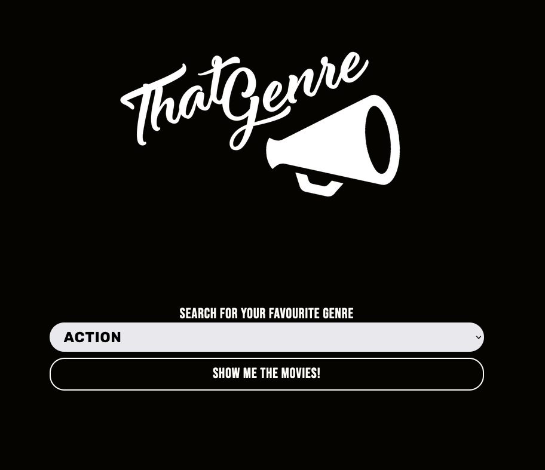
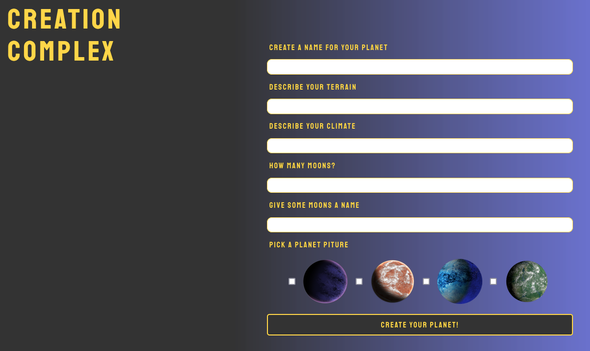
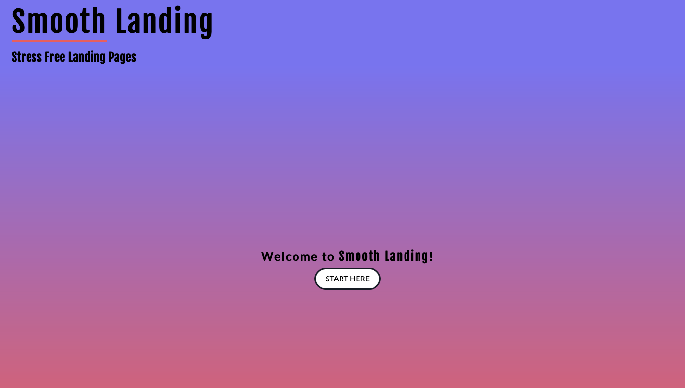

About Me
Building meaningful and cathartic projects with a focus on accessible and responsive user experiences.
Hi! I'm Hayden. I am a front end developer located in the Greater Toronto Area. My background in music has given me the skills to be creative without hindering my ability to build accessible and responsive web applications. I love learning new langauges to help inspire my code to be engaging and communicate my passion through the web. While I'm not coding I spend my time composing, performing and practicing music, or escaping reality through a video game or an enticing novel. I am excited to share my projects to the world and would enjoy hearing from you if you'd be interested in collaborating!
My Resume
Portfolio
That Genre
Creation Complex
Have you ever wondered what it was like to create your own planet? Well now you can with Creation Complex. The user fills out the form and a new planet will show up in this solar system. Planetary information will display when the "More Info" button is clicked, and the planet population updates when the "Live Here" button is clicked. Have fun, be creative and explore a new solar system!
Smooth Landing
This application gives the user the ability to create a landing page for their website with ease! With the option to copy and paste the code for their landing page, this application will save the users time to focus on the important things in life. I invite you create your own landing page!